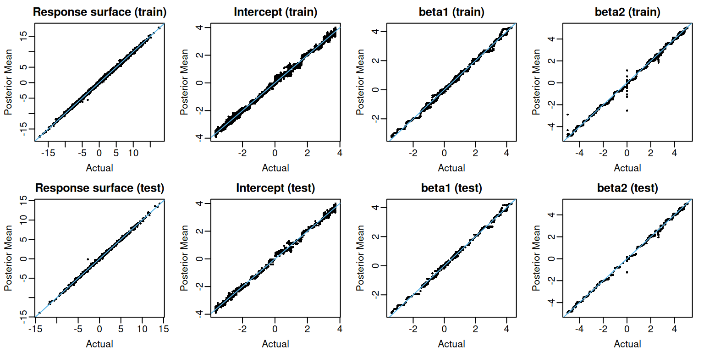
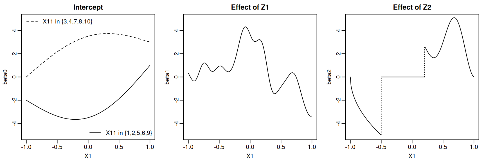
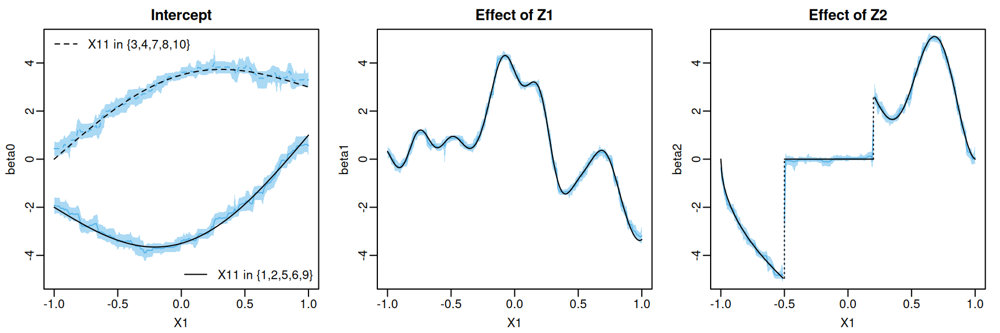

set.seed(727)
n_train <- 10000
n_test <- 1000
p_cont <- 10
p_cat <- 10
sigma <- 1Overview
A linear varying coefficient model posits a linear relationship between an outcome and certain covariates but allows that relationship to change with respect to the values of other variables That is, a linear varying coefficient model has the form where each function is approximated with an ensemble of regression trees and the error Deshpande et al. (2024) introduced VCBART, which extends the basic BART model and estimates each covariate function with its own regression tree ensemble1. flexBART supports fitting such VCBART models but provides much more control over the individual ensembles than the original VCBART implementation. Specifically, flexBART allows the size (specified using the optional argument M_vec or M), the tree prior hyperparameters (specified using the optional arguments alpha_vec and beta_vec), and the variables used for splitting (specified via the formula argument) to vary in each ensemble. flexBART also allows different splitting variables to used for each coefficient ensemble.
Example
We first demonstrate flexBART’s functionality using data generated from the model where contains continuous and categorical predictor. Each categorical covariate will take on 10 different values. We will generate training observations and testing observations.
We draw each continuous uniformly from and each categorical uniformly from the set
train_data <- data.frame(Y = rep(NA, times = n_train))
test_data <- data.frame(Y = rep(NA, times = n_test))
for(j in 1:p_cont){
train_data[,paste0("X",j)] <- runif(n = n_train, min = -1, max = 1)
test_data[,paste0("X",j)] <- runif(n = n_test, min = -1, max = 1)
}
for(j in 1:p_cat){
train_data[,paste0("X",j+p_cont)] <-
factor(sample(1:10, size = n_train, replace = TRUE), levels = 1:10)
test_data[,paste0("X",j+p_cont)] <-
factor(sample(1:10, size = n_test, replace = TRUE), levels = 1:10)
}For simplicity, we draw the covariates and from a distribution.
The three coefficient functions and are defined below.
beta0_true <- function(df){
tmp_X1 <- (1+df[,"X1"])/2 # re-scale X1 to [0,1]
tmp_X11 <- 1*(df[,"X11"] %in% c(1, 2, 5, 6, 9))
return(3 * tmp_X1 + (2 - 5 * (tmp_X11)) * sin(pi * tmp_X1) - 2 * (tmp_X11))
}
set.seed(517)
D <- 5000
omega0 <- rnorm(n = D, mean = 0, sd = 1.5)
b0 <- 2 * pi * runif(n = D, min = 0, max = 1)
weights <- rnorm(n = D, mean = 0, sd = 2*1/sqrt(D))
beta1_true <- function(df){
u <- 5*df[,"X1"] # re-scale x1 to [-5,5]
if(length(u) == 1){
phi <- sqrt(2) * cos(b0 + omega0*u)
out <- sum(weights * phi)
} else{
phi_mat <- matrix(nrow = length(u), ncol = D)
for(d in 1:D){
phi_mat[,d] <- sqrt(2) * cos(b0[d] + omega0[d] * u)
}
out <- phi_mat %*% weights
}
return(out)
}
beta2_true <- function(df){
tmp_X <- (1+df[,"X1"])/2 #re-scale X1 to [0,1]
return( (3 - 3*cos(6*pi*tmp_X) * tmp_X^2) * (tmp_X > 0.6) -
(10 * sqrt(tmp_X)) * (tmp_X < 0.25))
}We now evaluate the true slopes and response surface function on the training and testing observations
beta0_train <- beta0_true(train_data)
beta0_test <- beta0_true(test_data)
beta1_train <- beta1_true(train_data)
beta1_test <- beta1_true(test_data)
beta2_train <- beta2_true(train_data)
beta2_test <- beta2_true(test_data)
mu_train <-
beta0_train + train_data[,"Z1"] * beta1_train + train_data[,"Z2"] * beta2_train
mu_test <-
beta0_test + test_data[,"Z1"] * beta1_test + test_data[,"Z2"] * beta2_test
train_data[,"Y"] <-
mu_train + sigma * rnorm(n = n_train, mean = 0, sd = 1)
test_data <- test_data[,colnames(test_data) != "Y"]Fitting the Model
We’re now ready to fit our model.
flexBART::flexBART returns the posterior mean estimate and posterior samples for each evaluation (outputs named beta) and for the whole response surface $[Y = , = ] (outputs named yhat). We first plot the posterior mean evaluations of each and the response surface for both training and testing observations.
Code
# Okabe-Ito colorblind friendly palette
oi_colors <- palette.colors(palette = "Okabe-Ito")
par(mar = c(3,3,2,1), mgp = c(1.8, 0.5, 0), mfrow = c(2,4))
plot(mu_train, fit$yhat.train.mean, pch = 16, cex = 0.5,
xlab = "Actual", ylab = "Posterior Mean", main = "Response surface (train)")
abline(a = 0, b = 1, col = oi_colors[3])
plot(beta0_train, fit$beta.train.mean[,1], pch = 16, cex = 0.5,
xlab = "Actual", ylab = "Posterior Mean", main = "Intercept (train)")
abline(a = 0, b = 1, col = oi_colors[3])
plot(beta1_train, fit$beta.train.mean[,2], pch = 16, cex = 0.5,
xlab = "Actual", ylab = "Posterior Mean", main = "beta1 (train)")
abline(a = 0, b = 1, col = oi_colors[3])
plot(beta2_train, fit$beta.train.mean[,3], pch = 16, cex = 0.5,
xlab = "Actual", ylab = "Posterior Mean", main = "beta2 (train)")
abline(a = 0, b = 1, col = oi_colors[3])
plot(mu_test, fit$yhat.test.mean, pch = 16, cex = 0.5,
xlab = "Actual", ylab = "Posterior Mean", main = "Response surface (test)")
abline(a = 0, b = 1, col = oi_colors[3])
plot(beta0_test, fit$beta.test.mean[,1], pch = 16, cex = 0.5,
xlab = "Actual", ylab = "Posterior Mean", main = "Intercept (test)")
abline(a = 0, b = 1, col = oi_colors[3])
plot(beta1_test, fit$beta.test.mean[,2], pch = 16, cex = 0.5,
xlab = "Actual", ylab = "Posterior Mean", main = "beta1 (test)")
abline(a = 0, b = 1, col = oi_colors[3])
plot(beta2_test, fit$beta.test.mean[,3], pch = 16, cex = 0.5,
xlab = "Actual", ylab = "Posterior Mean", main = "beta2 (test)")
abline(a = 0, b = 1, col = oi_colors[3])
Pointwise Uncertainty
When the optional argument save_samples is set to TRUE (the default setting), flexBART::flexBART returns the posterior samples of the response surface and individual covariate function evaluations at each training and testing observation. The output attribute yhat.train (resp. yhat.test) is a matrix whose rows index MCMC draws and whose columns index training (resp. testing) observations. We can form posterior credible intervals for evaluations of the response surface at each training (resp. testing) observation by computing quantiles in each column of yhat.train (resp. yhat.test).
mu_train_l95 <-
apply(fit$yhat.train, MARGIN = 2, FUN = quantile, probs = 0.025)
mu_train_u95 <-
apply(fit$yhat.train, MARGIN = 2, FUN = quantile, probs = 0.975)
mu_test_l95 <-
apply(fit$yhat.test, MARGIN = 2, FUN = quantile, probs = 0.025)
mu_test_u95 <-
apply(fit$yhat.test, MARGIN = 2, FUN = quantile, probs = 0.975)For these data, the coverage is quite high
The output attribute beta.train (resp. beta.test) is a three-dimensional array whose dimensions respectively index MCMC draws, training (resp. testing) observations, and ensembles (i.e., covariate functions). To form credible intervals for each , we must compute column-wise quantiles in the corresponding slice of beta.train or beta.test.
beta_train_l95 <-
apply(fit$beta.train, MARGIN = c(2,3), FUN = quantile, probs = 0.025)
beta_train_u95 <-
apply(fit$beta.train, MARGIN = c(2,3), FUN = quantile, probs = 0.975)
beta_test_l95 <-
apply(fit$beta.test, MARGIN = c(2,3), FUN = quantile, probs = 0.025)
beta_test_u95 <-
apply(fit$beta.test, MARGIN = c(2,3), FUN = quantile, probs = 0.975)The coverage of these intervals is also quite good.
coverage <-
matrix(nrow = 2, ncol = 3,
dimnames = list(c("train", "test"),
c("beta0", "beta1", "beta2")))
coverage["train", "beta0"] <-
mean(beta0_train >= beta_train_l95[,1] & beta0_train <= beta_train_u95[,1])
coverage["train", "beta1"] <-
mean(beta1_train >= beta_train_l95[,2] & beta1_train <= beta_train_u95[,2])
coverage["train", "beta2"] <-
mean(beta2_train >= beta_train_l95[,3] & beta2_train <= beta_train_u95[,3])
coverage["test", "beta0"] <-
mean(beta0_test >= beta_test_l95[,1] & beta0_test <= beta_test_u95[,1])
coverage["test", "beta1"] <-
mean(beta1_test >= beta_test_l95[,2] & beta1_test <= beta_test_u95[,2])
coverage["test", "beta2"] <-
mean(beta2_test >= beta_test_l95[,3] & beta2_test <= beta_test_u95[,3])
print(round(coverage, digits = 3))
#> beta0 beta1 beta2
#> train 0.974 0.963 0.979
#> test 0.976 0.967 0.973Variable Selection
As we did in the Getting Started article, we can compute the marginal posterior probability inclusion probability that each is used in at least one splitting rule in the ensemble for each We can then select those ’s for which this probability exceeds 50%.
The varcounts element of flexBART()’s output is an array holding the posterior samples of the counts of rules based on each The dimensions of this array, respectively, index MCMC draws, elements of , and ensembles/coefficient functions (i.e., ).
dim(fit$varcounts)
#> [1] 4000 20 3The selected variables are
We see that and are selected for is selected for and is selected for So, at least for this run, there is no false positive and no false negative identifications.
Plotting Coefficient Functions
Although contains predictors, these coefficient functions only depend on and So, we can visualize these functions pretty easily. To do so, we first define a new data frame containing a fine grid of values, two different values (which induce different values), and dummy values for the remaining predictors and covariates.
x1_seq <- seq(from = -1, to = 1, by = 0.01)
n1 <- length(x1_seq)
plot_df <- data.frame(X1 = c(x1_seq, x1_seq))
for(j in 2:p_cont) plot_df[,paste0("X",j)] <- runif(2*n1, -1, 1)
plot_df[,"X11"] <-
factor(c(rep(1, times = n1), rep(3, times = n1)), levels = 1:10)
for(j in 2:p_cat){
plot_df[,paste0("X",p_cont+j)] <-
factor(sample(1:10, size = 2*n1, replace = TRUE), levels = 1:10)
}
plot_df[,"Z1"] <- rnorm(n = 2*n1, mean = 0, sd = 1)
plot_df[,"Z2"] <- rnorm(n = 2*n1, mean = 0, sd = 1)We then evaluate the coefficient functions on this data frame
beta0_plot <- beta0_true(plot_df)
beta1_plot <- beta1_true(plot_df)
beta2_plot <- beta2_true(plot_df)We can now plot the three true coefficient functions.
Code
ix0 <- 1:n1
ix1 <- (n1+1):(2*n1)
par(mar = c(3,3,2,1), mgp = c(1.8, 0.5, 0), mfrow = c(1,3))
plot(1, type = "n", xlim = c(-1,1), ylim = c(-5,5),
main = "Intercept", xlab = "X1", ylab = "beta0")
lines(x1_seq, beta0_plot[ix0], lty = 1)
lines(x1_seq, beta0_plot[ix1], lty = 2)
legend("bottomright",
legend = "X11 in {1,2,5,6,9}", lty = 1, bty = "n")
legend("topleft",
legend = "X11 in {3,4,7,8,10}",
lty = 2, bty = "n")
plot(1, type = "n", xlim = c(-1,1), ylim = c(-5,5),
main = "Effect of Z1", xlab = "X1", ylab = "beta1")
lines(x1_seq, beta1_plot[ix0])
ix2_0 <- which(x1_seq < -0.5)
ix2_1 <- which(x1_seq >= -0.5 & x1_seq < 0.2)
ix2_2 <- which(x1_seq >= 0.2)
plot(1, type = "n", xlim = c(-1,1), ylim = c(-5,5),
main = "Effect of Z2", xlab = "X1", ylab = "beta2")
lines(x1_seq[ix2_0], beta2_plot[ix2_0])
lines(x1_seq[ix2_1], beta2_plot[ix2_1])
lines(x1_seq[ix2_2], beta2_plot[ix2_2])
lines(x = c(-0.5, -0.5), y = c(beta2_plot[50], beta2_plot[51]), lty = 3)
lines(x = c(0.2, 0.2), y = c(beta2_plot[121], beta2_plot[122]), lty = 3)
We can also plot the posterior mean and pointwise uncertainty intervals. To do this, we will pass our plot_df data frame to flexBART’s predict method. The output attribute beta is an array containing the MCMC samples of each coefficient function evaluated at every observation in plot_df
We can get the posterior mean and 95% pointwise credible intervals for each evaluation.
Code
beta0_summary <-
data.frame(
MEAN = apply(plot_fit$beta[,,1], MAR = 2, FUN = mean),
L95 = apply(plot_fit$beta[,,1], MAR = 2, FUN = quantile, probs = 0.025),
U95 = apply(plot_fit$beta[,,1], MAR = 2, FUN = quantile, probs = 0.975))
beta1_summary <-
data.frame(
MEAN = apply(plot_fit$beta[,,2], MAR = 2, FUN = mean),
L95 = apply(plot_fit$beta[,,2], MAR = 2, FUN = quantile, probs = 0.025),
U95 = apply(plot_fit$beta[,,2], MAR = 2, FUN = quantile, probs = 0.975))
beta2_summary <-
data.frame(
MEAN = apply(plot_fit$beta[,,3], MAR = 2, FUN = mean),
L95 = apply(plot_fit$beta[,,3], MAR = 2, FUN = quantile, probs = 0.025),
U95 = apply(plot_fit$beta[,,3], MAR = 2, FUN = quantile, probs = 0.975))We can visualize the posterior mean and pointwise credible intervals of each coefficient function.
Code
par(mar = c(3,3,2,1), mgp = c(1.8, 0.5, 0), mfrow = c(1,3))
plot(1, type = "n", xlim = c(-1,1), ylim = c(-5,5),
main = "Intercept", xlab = "X1", ylab = "beta0")
polygon(x = c(x1_seq, rev(x1_seq)),
y = c(beta0_summary$L95[ix0], rev(beta0_summary$U95[ix0])),
col = adjustcolor(oi_colors[3], alpha.f = 0.5),
border = NA)
polygon(x = c(x1_seq, rev(x1_seq)),
y = c(beta0_summary$L95[ix1], rev(beta0_summary$U95[ix1])),
col = adjustcolor(oi_colors[3], alpha.f = 0.5),
border = NA)
lines(x1_seq, beta0_summary$MEAN[ix0], col = oi_colors[3])
lines(x1_seq, beta0_summary$MEAN[ix1], col = oi_colors[3], lty = 2)
lines(x1_seq, beta0_plot[ix0], lty = 1)
lines(x1_seq, beta0_plot[ix1], lty = 2)
legend("bottomright",
legend = "X11 in {1,2,5,6,9}", lty = 1, bty = "n")
legend("topleft",
legend = "X11 in {3,4,7,8,10}",
lty = 2, bty = "n")
plot(1, type = "n", xlim = c(-1,1), ylim = c(-5,5),
main = "Effect of Z1", xlab = "X1", ylab = "beta1")
polygon(x = c(x1_seq, rev(x1_seq)),
y = c(beta1_summary$L95[ix0], rev(beta1_summary$U95[ix0])),
col = adjustcolor(oi_colors[3], alpha.f = 0.5),
border = NA)
lines(x1_seq, beta1_summary$MEAN[ix0], col = oi_colors[3])
lines(x1_seq, beta1_plot[ix0])
plot(1, type = "n", xlim = c(-1,1), ylim = c(-5,5),
main = "Effect of Z2", xlab = "X1", ylab = "beta2")
polygon(x = c(x1_seq[ix2_0], rev(x1_seq[ix2_0])),
y = c(beta2_summary$L95[ix2_0], rev(beta2_summary$U95[ix2_0])),
col = adjustcolor(oi_colors[3], alpha.f = 0.5),
border = NA)
lines(x1_seq[ix2_0], beta2_summary$MEAN[ix2_0], col = oi_colors[3])
lines(x1_seq[ix2_0], beta2_plot[ix2_0])
polygon(x = c(x1_seq[ix2_1], rev(x1_seq[ix2_1])),
y = c(beta2_summary$L95[ix2_1], rev(beta2_summary$U95[ix2_1])),
col = adjustcolor(oi_colors[3], alpha.f = 0.5),
border = NA)
lines(x1_seq[ix2_1], beta2_summary$MEAN[ix2_1], col = oi_colors[3])
lines(x1_seq[ix2_1], beta2_plot[ix2_1])
polygon(x = c(x1_seq[ix2_2], rev(x1_seq[ix2_2])),
y = c(beta2_summary$L95[ix2_2], rev(beta2_summary$U95[ix2_2])),
col = adjustcolor(oi_colors[3], alpha.f = 0.5),
border = NA)
lines(x1_seq[ix2_2], beta2_summary$MEAN[ix2_2], col = oi_colors[3])
lines(x1_seq[ix2_2], beta2_plot[ix2_2])
lines(x = c(-0.5, -0.5), y = c(beta2_plot[50], beta2_plot[51]), lty = 3)
lines(x = c(0.2, 0.2), y = c(beta2_plot[121], beta2_plot[122]), lty = 3)